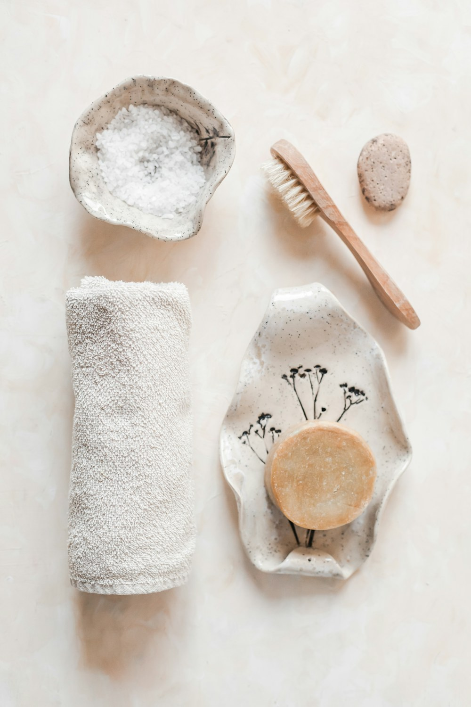

Skincare should leave room for you.
Arenne Skin is built around clear roles, quiet confidence and realistic routines for the life you actually live.
To make the shelf easier to read.
Product discovery can be beautiful without becoming vague. We organize products by category, skin behavior and highlighted ingredient role.
In an industry filled with 12-step regimens and hyperbolic promises, we believe in focused fundamentals that respect your skin barrier and your time.
Grounded education
We keep product education honest and grounded: no invented founder myths, no impossible miracle claims, and no pseudo-clinical jargon.
Three commitments
Every single bottle and jar in our collection answers to three core principles.
Explain the role
Every product clearly states what step it fills, the active mechanism, and which skin patterns will enjoy its texture most.
Respect the limit
Cosmetic education is not medical diagnosis. We celebrate healthy skin function rather than chasing artificial perfection.
Keep routines livable
A good routine is one you can sustain comfortably every day. Three dependable basics consistently outperform ten neglected steps.
Small-batch discipline, verified chemistry.
We work closely with seasoned cosmetic chemists who share our obsession with skin barrier compatibility.
Each formula begins with proven biocompatible hydrators—glycerin, squalane, ceramides, and panthenol. Actives are introduced at balanced, skin-friendly concentrations designed to work harmoniously together without causing irritation.
View ingredient directoryTextures engineered for slip, sink, and comfort.
Consistency is born from tactile pleasure. If a product feels heavy or pills under makeup, it will sit unused on the shelf.
From cushiony cloud cleansers to weightless daily fluids that leave zero white cast, every texture is meticulously balanced to absorb cleanly and leave skin feeling naturally supple.
Honour what holds the formula.
Thoughtful care extends from what touches your skin to how each container impacts the environment.
We choose recyclable amber glass that shields active ingredients from photo-oxidation, minimize plastic components, and ship in FSC-certified unbleached paper boxes printed with non-toxic vegetable inks.

Familiar names, honest context.
We describe common ingredient functions while keeping the full formula in view. No single active works in isolation; synergy, pH, and formulation integrity govern the outcome.
Always check the packaging for the complete INCI list and patch-test new products before full application.
Explore transparencyFour steps to steady skin
Follow a simple, repeatable ritual that adapts with the seasons.
Observe
Notice your skin’s baseline patterns throughout the day without judgment.
Simplify
Keep your daily foundation steady: gentle cleanse, hydrate, protect.
Introduce
Add only one focused targeted serum when you have a clear, distinct goal.
Adjust
Respond intuitively to changing seasons, humidity, sleep, and lifestyle.
Need a clearer shortlist?
Use our personalized consultation form to share your routine preferences and receive tailored cosmetic guidance.